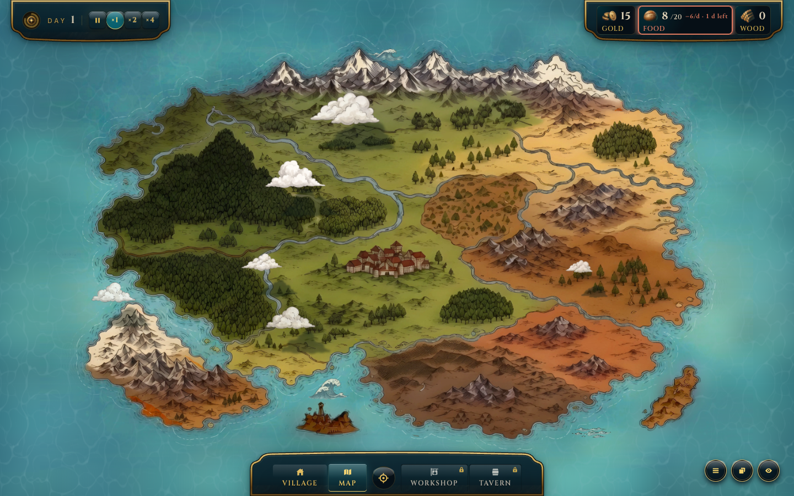
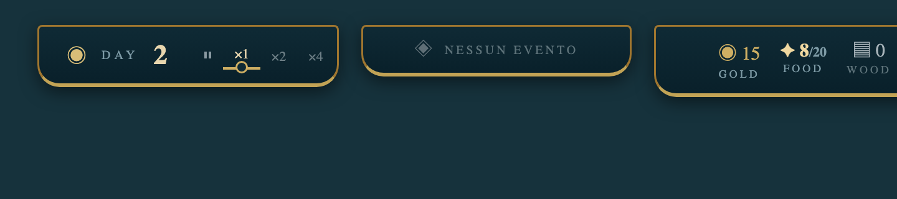
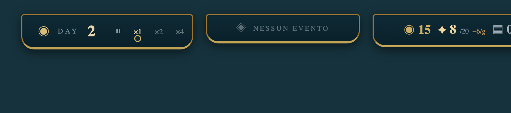
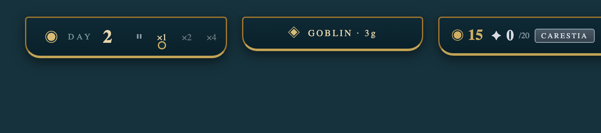
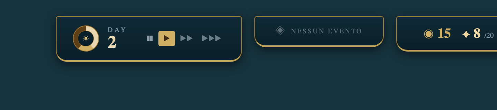
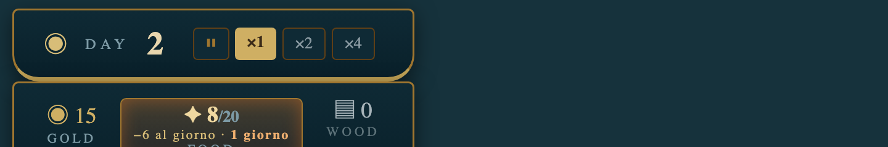
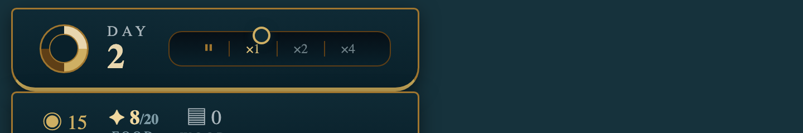
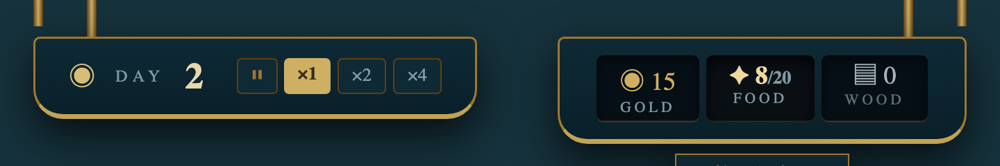

hud-top-tabsStatus: in_review · V1 · source sha d53c5bb2 · build congelata · 3/3 critiche image-grounded, 2/3 ranking image-grounded (chatgpt degradato: mockup non pervenuti)


Cosa cambia: 3 placche della stessa dimensione, più lontane dai bordi. A sx: placca giorno invariata, ma la velocità diventa tacche + perla (la perla lacca sta sotto la velocità attiva, niente guida d'ottone). Al centro: nuovo terzo tab sempre presente — quando non c'è evento mostra "NESSUN EVENTO" (placca vuota, override del contratto renders-null approvato). A dx: risorse come ora.

Chip risorse a larghezza fissa e anatomia unica: glifo + numero grande + tasso (−6/g), niente label ridondante GOLD/FOOD/WOOD. Tab centrale: "NESSUN EVENTO".

FOOD esaurito: badge "CARESTIA" in ferro freddo al posto di "0 d left" (microcopy semantica). Tab centrale con evento reale: "GOBLIN · 3g".

Novità: placca giorno più grande con quadrante giorno/notte (anello ottone con fase); velocità a frecce progressive (pausa · ▶ · ▶▶ · ▶▶▶ — convenzione RimWorld/Frostpunk/CK3) con l'attiva in ottone pieno; placche sx/dx identiche, margine laterale ampliato; tab centrale "NESSUN EVENTO" sempre presente.
2/20 −6/d · 0 d left: l'informazione più importante dell'HUD (quando muori di fame) ha il corpo più piccolo e abbreviazioni da tool ("/d", "d").
Cosa cambia: il cibo smette di avere un bordo rosso piatto. Al suo posto, la cella FOOD prende una luce ambra interna (come brace dietro vetro) e il testo va su due righe: "−6 al giorno" piccolo, "1 giorno" grande. Se scendi a 0 giorni, la cella diventa ferro freddo (grigio-blu), non più rossa.
Identico il resto. Solo la cella del cibo cambia aspetto.

Cosa cambia: al posto dei 4 bottoncini (⏸ ×1 ×2 ×4) c'è una guida di ottone con 4 tacche e una perla che scorre sulla velocità attiva. A sinistra, il cerchio decorativo diventa un quadrante del giorno (alba→tramonto). "DAY" resta, il numero cresce.
Il tab risorse non cambia.

Cosa cambia: le placche sembrano davvero appese al soffitto: barrette d'ottone sopra + ombra forte sotto. Il tab risorse diventa una lastra con 3 incavi scavati (non più 3 card separate) e l'avviso del cibo scende su un cartellino attaccato sotto la placca.
Cambia la forma fisica dell'intero cluster.
| A | B | C | merge suggerito | |
|---|---|---|---|---|
| claude | 1° (r6 h7 f9 r8) | 3° | 2° (r7 h6 f6 r6) | base A + ferramenta/incavi C; cartellino solo fallback |
| deepseek | 3° | 2° | 1° (r8 h9 f8 r8) | tutto C + placca centrale "Nessun evento" (⚠ viola contratto renders-null: eccezione da approvare) |
| chatgpt | degrado: immagini non pervenute | — | ||
Consenso: structural = C (2/2). Merge raccomandato: cella FOOD materica (A) + ferramenta + incavi (C); cartellino come fallback con tetto altezza; regolo (B) → secondo giro.
Placche non leggono come oggetto appeso · FOOD = stringa da db · bottoni velocità app-like · scala stati mancante (0 d left deve essere ferro freddo) · glifi piatti
Raw: .mw/ui-catalog/components/hud-top-tabs/critiques/ + mockups/rank-*.md
RULED 2026-10-24 — { component:hud-top-tabs, round:1,
outcome: approve_B_modified,
selected: "selettore velocità a tacche+perla SENZA guida ottone; placca giorno invariata",
rejected: "A (halo interno cibo = ruling preesistente violato), C (ferramenta appeso = rejected)",
notes: "le AI non conoscevano il ruling 'no halo interno' — aggiunto a ART-DIRECTION rev2" }